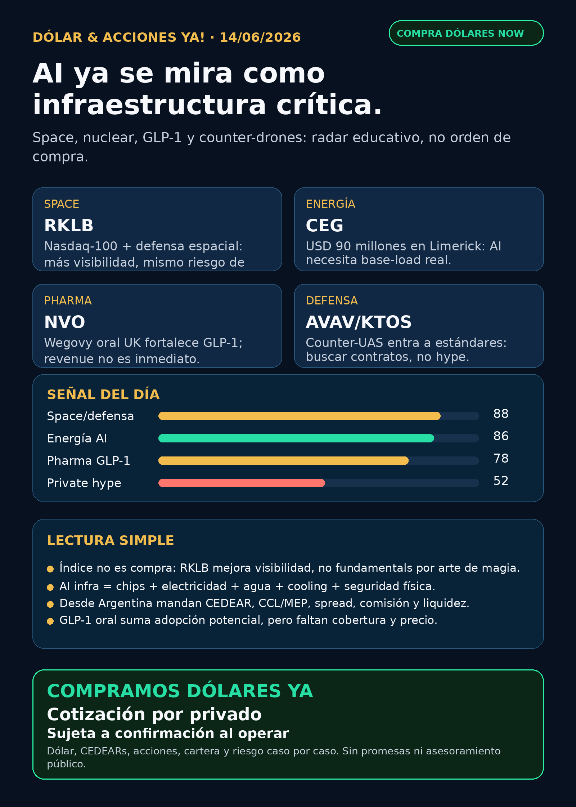

Dólar & Acciones YA!
RKLB entra al Nasdaq-100; CEG/nuclear y data centers refuerzan energía crítica; Wegovy oral UK y counter-drones marcan radar pharma/defensa.
DÓLAR · CEDEARs · ACCIONES · RIESGOServicio privado por mensaje. Cotización de dólar sujeta a confirmación al operar.

Audio suspendido
Por instrucción vigente de Charly del 05/06/2026, esta edición no genera ni adjunta voz/TTS. El reporte completo queda en texto y pack descargable.
Links útiles
Dólar & Acciones YA! — 14/06/2026
Reporte educativo para entender dólar, acciones, CEDEARs, energía, AI, pharma, defensa, space y riesgo desde Argentina. Ordenado por valor educativo y señal de radar, no por recomendación de compra.
1. Lectura simple del día
La lectura simple: AI ya no se mira sólo como chips o software; se está convirtiendo en infraestructura crítica. Hoy aparecen tres capas juntas: space/defensa, energía nuclear/base-load y pharma regulatoria. En criollo: el mercado no premia solamente “la empresa linda”; mira si hay infraestructura real, contratos, energía, regulación, seguridad y un instrumento razonable para entrar o seguir desde Argentina.
Regla base para no confundirse: buena empresa ≠ buena inversión al precio actual ≠ buen instrumento desde Argentina ≠ buen tamaño dentro de una cartera.
2. Tesis central
La tesis de hoy es: el moat se está moviendo hacia activos físicos difíciles de copiar: satélites, defensa, energía estable, data centers, cooling, seguridad física, datos clínicos y regulación.
- En AI infra, no alcanza con comprar “la narrativa de AI”: chips, electricidad, agua, cooling, data centers y ciber/defensa ya son parte de la tesis.
- En space/defensa, no alcanza con cohetes o drones virales: importan contratos, integración, estándares y presupuesto público.
- En pharma, GLP-1 oral mejora la historia de adopción, pero revenue real depende de cobertura, precio, supply y competencia.
- En Argentina, antes de mover plata real importan MEP/CCL, CEDEAR, ratio, spread, comisión, liquidez y horario.
3. Ranking educativo por calidad de señal — no es orden de compra
1) Rocket Lab / RKLB — space con flujo indexado y defensa espacial
Qué pasó: Rocket Lab anunció su inclusión en el Nasdaq-100, efectiva antes de la apertura del 22 de junio de 2026. Además, SpaceNews reportó que Space Systems Command confirmó a Rocket Lab como proveedor del spacecraft bus para el satélite PTS-G de Viasat.
Por qué importa: la entrada a índice puede traer visibilidad y flujos, pero no mejora automáticamente márgenes, caja ni ejecución. La parte más interesante para el radar es que RKLB se va corriendo de “historia de launch” a space systems / defensa espacial.
Estado: señal fortalecida / en radar. No es recomendación de compra.
Riesgo: valuación, ejecución, dilución, contratos públicos, márgenes, concentración y volatilidad alta.
Fuentes:
- Rocket Lab / GlobeNewswire: https://www.globenewswire.com/news-release/2026/06/12/3310939/0/en/rocket-lab-to-join-the-nasdaq-100-index.html
- SpaceNews: https://spacenews.com/k2-space-rocket-lab-win-key-supplier-roles-in-space-force-satcom-program/
2) Constellation Energy / CEG — nuclear y electricidad real para AI
Qué pasó: Constellation informó una inversión de USD 90 millones en el outage/refueling de Limerick Clean Energy Center. La planta tiene 2.317 MW y capacidad equivalente a 1,7 millones de hogares.
Por qué importa: AI necesita energía estable. Esto no es un meme de data centers: es mantenimiento, vida útil, generación base-load y confiabilidad eléctrica.
Estado: fortalece tesis de energía/nuclear en radar.
Riesgo: valuación, regulación, deuda, capex, disponibilidad de plantas, política energética y acceso local al instrumento.
Fuente primaria: https://www.constellationenergy.com/news/2026/06/constellation-invests-90-million-in-limerick-refueling-outage-boosting-local-economy.html
3) AI data centers como infraestructura crítica — chips + power + cooling + seguridad
Qué pasó: Modern War Institute / West Point publicó un marco sobre data centers como targets físicos de alto valor. El punto central: los AI data centers dependen de electricidad, agua, cooling, transmisión y seguridad.
Por qué importa: fortalece el mapa completo de AI infra: NVDA, GOOGL/GOOG, MSFT, AMZN, ORCL, VRT, GEV, CEG, utilities y grid equipment. El moat no es sólo “modelo”: es infraestructura operable y defendible.
Estado: señal estructural / radar educativo. No es dato financiero puntual para comprar nada.
Fuente: https://mwi.westpoint.edu/data-center-warfare-defending-the-key-terrain-of-ai-infrastructure/
4) Novo Nordisk / NVO — GLP-1 oral aprobado en UK, con riesgo operativo aparte
Qué pasó: MHRA aprobó semaglutide/Wegovy tablet como primer GLP-1 oral para weight loss en UK. La fuente aclara que actualmente no está disponible vía NHS. Novo también informó un incidente IT con acceso no autorizado a sistemas internos y datos pseudonimizados de pacientes de algunos ensayos clínicos; la empresa dice que core business no fue impactado.
Por qué importa: la pastilla puede bajar fricción de adopción frente a inyectables, pero aprobación regulatoria no equivale a ventas inmediatas. El incidente IT recuerda que pharma también tiene riesgo de datos, confianza y ciberseguridad.
Estado: GLP-1 oral fortalece tesis sectorial; incidente IT debilita/obliga a vigilar gobernanza.
Fuentes:
- MHRA / GOV.UK: https://www.gov.uk/government/news/first-glp-1-tablet-for-weight-loss-approved-in-the-uk
- Novo Nordisk: https://www.novonordisk.com/news-and-media/latest-news/incident-update.html
5) Counter-drone / AVAV, KTOS, RTX, LMT, NOC, ITA/XAR — defensa física como carril de radar
Qué pasó: el senador John Cornyn presentó legislación para que el US Army establezca estándares de interoperabilidad para tecnologías counter-UAS.
Por qué importa: si el counter-drone pasa de soluciones aisladas a estándares/procurement, el radar debe mirar empresas con productos, contratos, integración y backlog. AVAV queda como nombre obligatorio por drones/precision strike/counter-UAS/BlueHalo; KTOS, RTX, LMT, NOC e ITA/XAR entran como universo educativo.
Estado: fortalece tesis sectorial / vigilar. Falta mapear producto y contratos por compañía antes de elevar candidatos.
Fuente primaria: https://www.cornyn.senate.gov/news/cornyn-introduces-bill-to-spur-counter-drone-defense-innovation/
4. Capa Argentina — dólar, MEP, CCL y CEDEARs
Referencias públicas consultadas el 14/06/2026 alrededor de la mañana AR:
- BlueLytics oficial venta: $1453.00. Última actualización: 2026-06-12T19:45:59.59414-03:00.
- BlueLytics blue venta: $1460.00. Última actualización: 2026-06-12T19:45:59.59414-03:00.
- CriptoYa MEP AL30 24hs: $1448.20. Timestamp: 12/06 16:56 AR. Puede ser cierre previo según mercado/instrumento.
- CriptoYa CCL AL30 24hs: $1495.28. Timestamp: 12/06 16:56 AR. Puede ser cierre previo según mercado/instrumento.
- CriptoYa USDT venta: $1502.00. Timestamp: 14/06 08:50 AR. Puede ser cierre previo según mercado/instrumento.
Traducción en criollo:
- MEP: forma de dolarizar vía bonos. Puede tener parking, spread, comisiones y diferencia compra/venta.
- CCL: tipo de cambio implícito que suele pegar en CEDEARs y acciones extranjeras miradas desde Argentina.
- CEDEAR: no es la acción directa de Estados Unidos; tiene ratio, liquidez local, spread, horario y CCL implícito.
- Spread: diferencia entre comprar y vender. Si es ancho, entrás perdiendo.
- Instrumento importa: tener razón en la empresa y equivocarse en liquidez/precio/tamaño puede arruinar una buena tesis.
5. Precios de referencia — contexto, no fundamento
No publico una tabla de precios aproximados hoy: el endpoint público de precios devolvió valores/timestamps anómalos para varios tickers en esta corrida. Para precio de entrada, P&L o ejecución real, usar broker/mercado en vivo y separar subyacente USD, CEDEAR local y CCL/MEP.
6. Watchlist base — seguimiento rápido
- RKLB: señal nueva fuerte por Nasdaq-100 y defensa espacial. Índice no equivale a compra; revisar valuación, liquidez, dilución y ejecución.
- NVDA: sin señal primaria corporativa nueva superior en esta corrida, pero MWI fortalece la tesis estructural de GPUs/data centers como infraestructura física crítica.
- PLTR: revisado; sin señal nueva fuerte verificada 24–72h.
- TSM: foundry crítica. RSS detectó revenue mensual de mayo, pero la primaria de TSMC quedó bloqueada; no elevo números exactos.
- MU: memoria/HBM sigue en radar; earnings del 24 de junio como catalizador. Sin claim fundamental nuevo verificado.
- GOOG/GOOGL: cloud, TPUs, datos, Waymo y distribución siguen estructurales; hoy la señal llega indirectamente por data centers críticos.
- AAPL: revisado; sin señal nueva fuerte posterior a Siri AI verificado en corridas previas.
- HOOD: revisado; agentic trading/MCP sigue como radar educativo, no promesa de rentabilidad.
- TSLA: revisado; sin señal verificable nueva fuerte para autonomía/robotaxi en esta corrida.
- ASML: litografía crítica; ASML sí, all-in no. Chatter sobre Mistral quedó no verificado.
- Gold / GLD / GOLD / B: sigue obligatorio desambiguar. GLD es ETF de oro; GOLD suele ser Barrick; Broadcom es AVGO, no B.
- RVI: fondo cerrado/wrapper privado, no operating company. Señal de Stocktwits no alcanza; requiere SEC/fact sheet/NAV/premium.
- SNDK: storage/NAND/SSD para data centers; revisado sin señal nueva central.
- CBRS: radar alto AI chips si aparece filing/IPO actualizado; requiere revenue, concentración de clientes, TSMC, lockups y acceso.
- AVGO: custom silicon/networking AI sigue central; sin señal primaria nueva superior hoy.
7. Energía y farmacéuticas/salud
Energía: CEG fortalece nuclear/base-load. GEV, VRT, utilities y grid equipment siguen en radar porque AI necesita electricidad, cooling y transmisión. En Argentina quedan revisadas YPF, VIST, Pampa Energía, TGS y Central Puerto; hoy no apareció señal externa fuerte nueva para elevarlas como titular. Antes de ejecución local: mirar precio, CCL/MEP, liquidez, spread y balance.
Pharma/salud: NVO se fortalece por Wegovy oral UK, pero con red flag operativo por incidente IT. LLY sigue competidor estructural en GLP-1. Pfizer/Metsera/berobenatide apareció como auditoría secundaria, no como claim central sin primaria fresca.
8. Defensa, aerospace, space y physical AI
- Defensa/guerra física: revisado con señal sectorial counter-UAS. AVAV queda en radar obligatorio; RTX, LMT, NOC, GD, HWM, KTOS, BA, ITA/XAR revisados sin señal primaria más fuerte que el carril counter-drone de hoy.
- GE / GE Aerospace: revisado como industrial aeroespacial/defensa con moat de motores y aftermarket; sin señal primaria nueva superior esta mañana.
- Space/orbital AI: RKLB es titular. SpaceX/SPCX sigue como evento SEC conocido por corridas previas, pero no accionable automáticamente hasta efectividad/listing/precio/float/liquidez/acceso Argentina/US.
- Autonomous mobility / physical AI: Tesla, Waymo/Alphabet, Uber, Zoox/Amazon y Joby revisados; sin señal verificable nueva fuerte hoy.
9. Radar amplio fuera de watchlist
- Private markets: DXYZ sirve para aprender exposición empaquetada a private tech, no para perseguir FOMO. Falta NAV/premium/liquidez antes de hablar de accionabilidad.
- RVI: no elevar market cap/holdings desde Stocktwits; requiere fuente regulatoria.
- Crypto gobernado: sin input nuevo y sin auditoría on-chain. No mezclar tokens virales con acciones/PPI.
- AI trading agents: sin señal nueva hoy; sigue la regla: data accuracy, reliability, ledger, paper/read-only, aprobación humana y límites de riesgo.
10. Red flags / hype para ignorar
- “Entró al índice, entonces hay que comprar”: falso. Puede traer flujos, pero no cambia fundamentals automáticamente.
- “Data centers son sólo inmuebles”: incompleto. Ya son electricidad, cooling, seguridad física, ciber y geopolítica.
- “GLP-1 oral aprobado = ventas inmediatas”: falso. Falta cobertura, precio, supply, adopción y competencia.
- “Wrapper de private tech = comprar SpaceX/OpenAI directo”: falso. Hay NAV, premium/descuento, liquidez, fees y valuación privada.
- “Counter-drone = cualquier empresa de drones sube”: humo. Hay que mirar contratos, estándares, interoperabilidad y margen.
11. Recibo visible de cobertura
Revisado hoy: watchlist base completa, posiciones/tickers habituales de Mi Simulación, energéticas argentinas, pharma/GLP-1, defensa/aeroespacial, space/private wrappers, AI infra/semis, fintech/AI agents, autonomía/physical AI y crypto gobernado. Donde no hubo señal fuerte, queda marcado como revisado sin señal nueva fuerte.
12. Qué mirar después
1. RKLB: efecto Nasdaq-100, volumen, precio post-inclusión, próximos contratos y caja/dilución.
2. CEG/energía: valuación, contratos, capacidad, deuda y señales de demanda data center.
3. NVO/LLY: cobertura/reembolso de GLP-1 oral y respuesta competitiva.
4. Counter-UAS: si el proyecto avanza y qué empresas aparecen con contratos verificables.
5. Argentina: MEP/CCL, spreads de CEDEARs y liquidez antes de cualquier operación humana.
13. Servicio privado
Dólar · CEDEARs · Acciones · Riesgo. Si querés comprar o vender dólares, invertir en acciones o pensar una estrategia financiera más personalizada, escribime por privado y lo vemos caso por caso. Cotización sujeta a confirmación al momento de operar.
14. Disclaimer
Esto no es asesoramiento financiero personalizado ni orden de compra/venta. Es research educativo para decisión humana: cada caso depende de objetivo, monto, plazo, liquidez, cartera, impuestos, broker y tolerancia al riesgo.
Dólar · Acciones · Consulta privada
Compra/venta de dólares, CEDEARs, acciones, cartera y riesgo caso por caso. Cotización sujeta a confirmación al momento de operar.